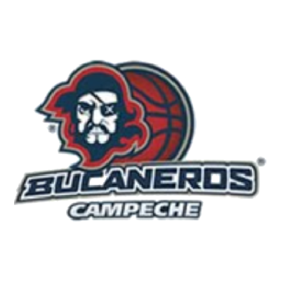
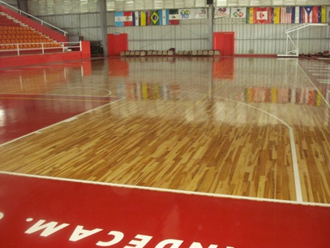

CNMB
| Escudo |
|---|
|  |
| Datos |
| Nombre: Bucaneros de Campeche Anio de Fundación: 1980-1998 Ciudad: Campeche Estadio: Gimnasio Manuel Prego Galera Capacidad: 2,000 Sitio web: https://web.archive.org/web/20080301105054/http://www.bucanerosdecampeche.com/ |
| Historia |
| La historia del basquetbol en Campeche se remonta a la d cada de los ochenta en la desaparecida CIPEBA (Circuito Peninsular de Baloncesto) durante el per odo 1980-1998, cuyo lapso fue, cuna, semillero y ocaso de muchos jugadores campechanos que vieron en ella el desarrollo y fortaleza del baloncesto campechano, que la convertir a en uno de los Estados m s fuertes de este deporte. Posteriormente la calidad y el deseo de competencia llevo al Club a incorporarse de manera profesional al BAPROSUR (Basquetbol Profesional del Sureste) y en la LNBP. |
| Estadio |
|  |